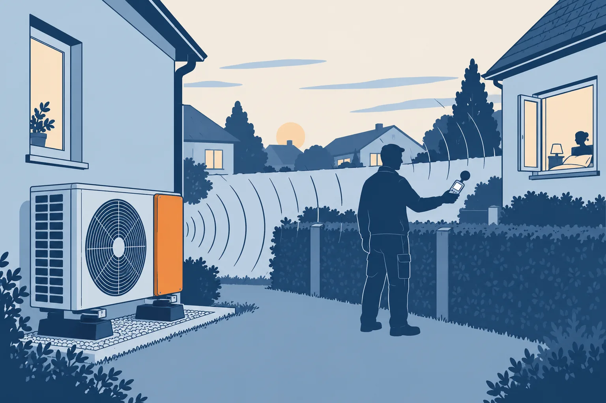
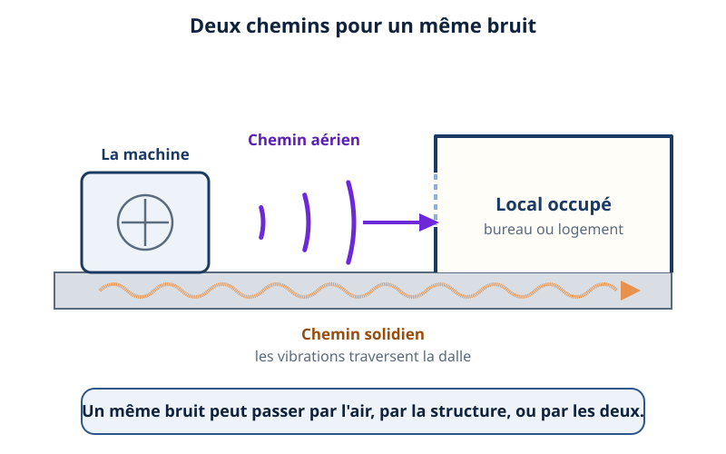
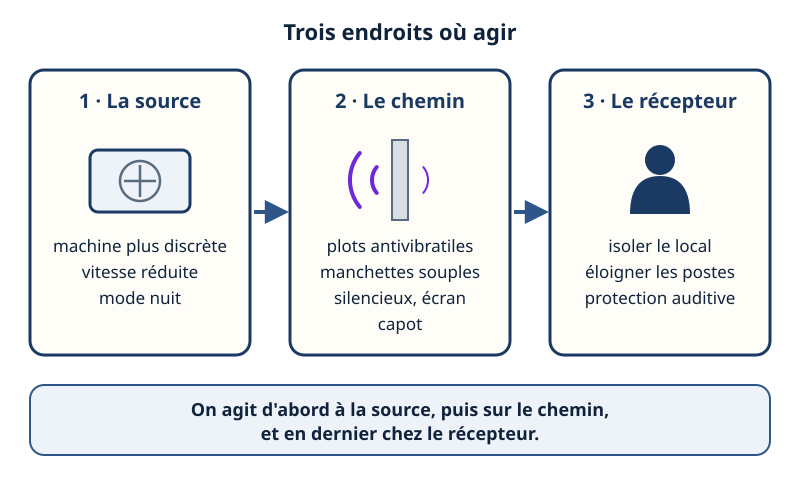
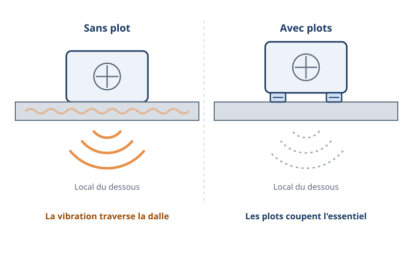
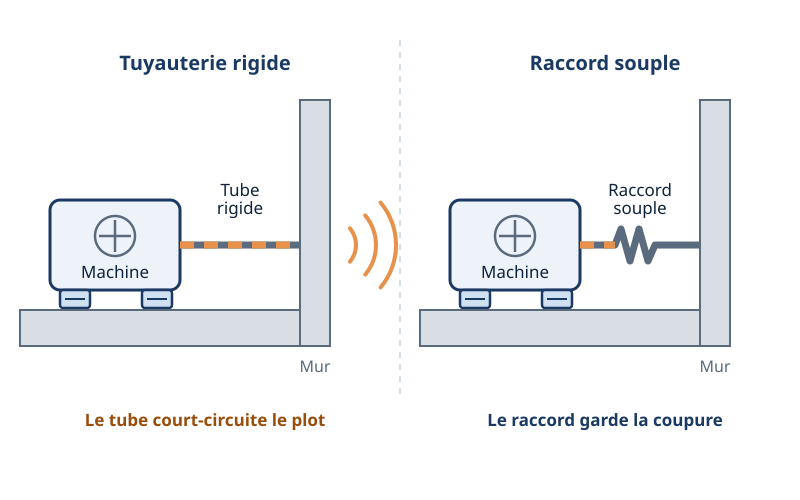
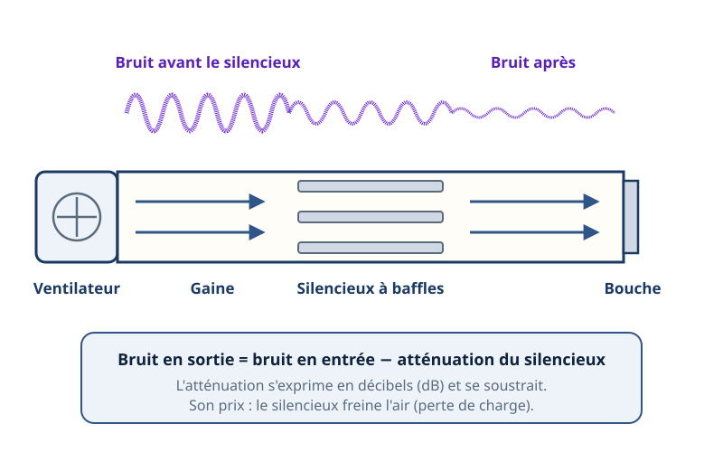
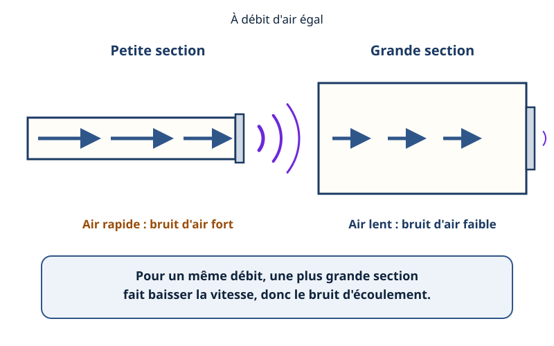
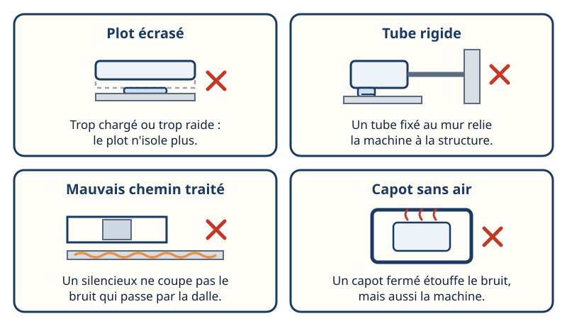
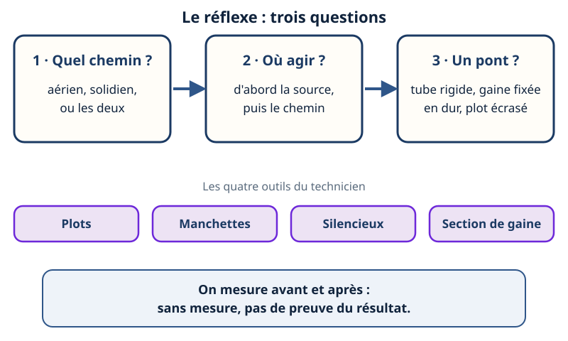

Plots, silencieux · mini-station commentée · 8 écrans et 4 questions · environ 10 minutes

Objectif
À la fin de la station, vous savez dire par quel chemin un bruit arrive — par l'air ou par la structure —, choisir où agir (la source, le chemin, le récepteur), expliquer ce que font un plot antivibratile, une manchette souple et un silencieux, relier la vitesse de l'air dans une gaine au bruit, et repérer les erreurs qui ruinent un traitement.
Référentiel : TP TECVC, REAC TP-00133 — CP4 (VMC), CP7 (ventilation tertiaire) et CP9 (climatisation) : le technicien d'études qui dimensionne un réseau d'air ou pose un groupe extérieur en prescrit aussi le traitement acoustique.
Chaque écran peut être expliqué à voix haute : le bouton « Écouter » commente ce que vous voyez. Rien n'est dit qui ne soit aussi écrit.
1 / 12
Écran 1 sur 8
Deux chemins : l'air et la structure
Un bruit ne gêne que s'il arrive à quelqu'un. Il y arrive par deux chemins :
le chemin aérien : l'onde sonore se propage dans l'air, traverse une ouverture ou une paroi légère ;
le chemin solidien : la vibration de la machine passe dans la structure (dalle, mur, tuyauteries, fixations), qui la transmet puis la rayonne en bruit dans un autre local.
Une même machine emprunte souvent les deux. On ne les traite pas de la même façon : écran, capot, silencieux pour l'air ; plots et raccords souples pour la structure. Traiter le mauvais chemin ne change rien.

Violet : l'air transmet. Orange : la dalle transmet.
Écran 2 sur 8
Trois endroits où agir
La source : une machine plus discrète (comparer les données acoustiques des constructeurs), une vitesse de rotation réduite, un mode nuit quand la machine en propose un.
Le chemin : plots antivibratiles, manchettes et raccords souples, silencieux et pièges à son dans les réseaux d'air, écran acoustique, capotage.
Le récepteur : isoler le local, éloigner les postes ; les protections auditives individuelles ne viennent qu'en dernier recours.
L'INRS (Institut national de recherche et de sécurité) l'écrit : agir sur la source est le moyen le plus efficace de lutter contre le bruit. Le Code du travail (article R. 4432-1) impose à l'employeur de supprimer ou réduire au minimum le risque, en tenant compte de la disponibilité de mesures à la source.

De gauche à droite : on commence par la source.
Écran 3 sur 8
Le plot antivibratile : couper le chemin solidien
Un compresseur ou un ventilateur qui tourne pousse sa structure à la cadence de sa rotation. Posé sur la dalle, il lui transmet cette vibration. Entre la machine et son support, on place un plot antivibratile : un élément élastique (élastomère ou ressort en acier). L'ensemble machine + plots forme un ressort avec une masse, qui a une fréquence propre.
Règle du modèle simple (sans amortissement) : le plot n'isole que si la fréquence des vibrations de la machine dépasse √2 fois la fréquence propre. En dessous, il peut même amplifier. Plus le plot s'écrase sous la charge, plus la fréquence propre baisse : la charge portée par chaque plot se choisit dans la plage indiquée par le fabricant.

Même machine : à gauche la dalle transmet, à droite les plots coupent l'essentiel.
Écran 4 sur 8
Ne pas refaire le pont : manchettes et raccords souples
Une machine sur plots reste reliée à l'installation par des tuyauteries, des gaines, des câbles. Si l'un d'eux est rigide et fixé à la structure, la vibration passe par lui : il court-circuite le plot.
Tuyauteries : un raccord souple (flexible, compensateur en accordéon) dès la sortie de la machine, puis des colliers à garniture élastique.
Gaines : une manchette souple entre le ventilateur et la gaine rigide.
Câbles : de la longueur en boucle, jamais tendus.
Le souple doit rester souple : un flexible tendu ou en butée retransmet la vibration.

Le plot est posé dans les deux cas : seul le raccord souple garde la coupure.
Écran 5 sur 8
Le silencieux : retirer du bruit dans la gaine
Dans un réseau d'air, le bruit du ventilateur voyage dans la gaine avec l'air et ressort par les bouches. Un silencieux (ou piège à son) est un tronçon garni de matériau absorbant — souvent des baffles, des lames parallèles entre lesquelles l'air passe — qui dissipe l'énergie sonore.
Son atténuation s'exprime en décibels (dB) et se lit dans les données du constructeur.
Niveau en sortie = niveau en entrée − atténuation : ici, les décibels se soustraient, car l'atténuation est un écart de niveaux.
Son prix : il freine l'air. Cette perte de charge s'ajoute au réseau et se prévoit au dimensionnement du ventilateur.
Un piège à son entre deux locaux limite aussi le bruit qui passe de l'un à l'autre par la gaine.

L'onde s'affaiblit en traversant les baffles ; l'air, lui, est un peu freiné.
Écran 6 sur 8
La vitesse de l'air et le bruit
L'air fait lui-même du bruit : turbulences dans les coudes, aux registres, aux grilles et aux bouches. Ce bruit d'écoulement augmente très vite quand la vitesse augmente.
Or, à débit donné, vitesse = débit ÷ section (la relation est reprise dans la station Débit, vitesse, section d'AéroRézo). Pour baisser le bruit à la cause :
agrandir la section de la gaine pour ralentir l'air ;
éviter les étranglements : coudes serrés, registres fermés à moitié pour « équilibrer » ;
faire tourner le ventilateur moins vite quand le besoin le permet.
Un silencieux placé sur une gaine trop étroite traite le symptôme et ajoute de la perte de charge. Les vitesses à viser dépendent du local et se prennent dans les guides de conception.

Flèches longues, air rapide, bruit fort. Flèches courtes, air lent, bruit faible.
Écran 7 sur 8
Les erreurs classiques
Le plot écrasé : plot trop chargé (il s'écrase, arrive en butée) ou mal choisi (trop raide pour la charge portée). Il n'isole plus.
Le tube rigide : tuyauterie, gaine ou câble fixé en dur à la structure, sans élément souple. Il court-circuite les plots.
Le mauvais chemin traité : un silencieux ne coupe pas un bruit qui passe par la dalle, un plot ne coupe pas un bruit qui passe par l'air. D'où l'écran 1.
Le capot sans air : un capot fermé étouffe le bruit mais aussi la machine, dont l'échangeur ne reçoit plus assez d'air.

Dans chaque cas, le traitement est là — mais il ne marche pas.
Écran 8 sur 8
Bilan et le réflexe
Un bruit passe par l'air, par la structure, ou par les deux : on identifie le chemin avant d'agir.
On agit d'abord à la source, puis sur le chemin, en dernier chez le récepteur.
Le plot coupe la structure ; la manchette et le raccord souple empêchent le pont ; le silencieux retire du bruit dans l'air, au prix d'une perte de charge.
La vitesse de l'air fait du bruit : on agrandit la section avant d'ajouter un silencieux.
Le réflexe : trois questions — quel chemin, où agir, y a-t-il un pont — puis mesurer avant et après.

Trois questions avant de poser quoi que ce soit.
Question 1 sur 4
Un groupe sur une terrasse gêne le local du dessous, mais presque rien dehors. Quel chemin est le plus probable ?
Rappel de l'écran 1 — deux chemins, l'air et la structure.
Question 2 sur 4
Un plot antivibratile n'isole vraiment que si…
Rappel de l'écran 3 — le plot est un ressort.
Question 3 sur 4
Machine sur plots, tuyauterie fixée au mur sans élément souple : que se passe-t-il ?
Rappel de l'écran 4 — le tube rigide fait le pont.
Question 4 sur 4
Bruit d'air trop fort à une bouche, gaine trop étroite pour le débit : quelle action traite la cause ?